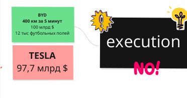
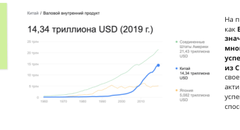
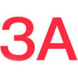
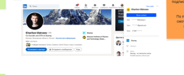
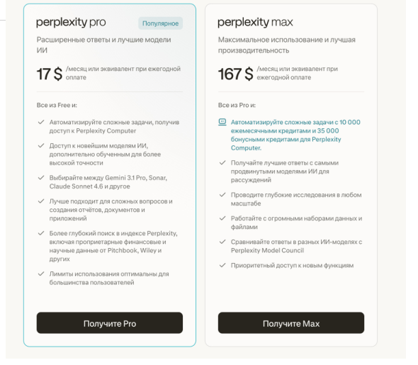

Как учиться всю жизнь бесплатно у сильнейших: находить лучшие практики, собирать свой совет экспертов и превращать чужой опыт в драйверы роста своей компании.
Практикум A-PlayersPro-Research
Главный тезис модуля
Самое ценное образование в вашей жизни стоит 0 рублей. Это ресёрч.
Самые ключевые драйверы роста мы всегда находили через ресёрч. Ваша насмотренность — внутренний актив, которого нет ни у одного конкурента. Образ результата встречи: у каждого — свой advisory board.
Практикум A-PlayersРесёрч = насмотренность
Маршрут встречи
От бенчмарков — к своему совету экспертов
1
Что такое бенчмарк и 4 типа бенчмаркинга
2
Экран восприятия: видеть то, что не видят другие
3
Кого ресёрчить + инструменты рынка и конкурентов
4
Кто носитель знания + сервисы консультаций
5
Как выйти: интро, бренд соседства, воронка адвайзеров
6
Вопросы, завершение и цепочка интро
7
Инфраструктура + AI-инструменты и промпты
8
Домашка: свой ресёрч и первый адвайзер
Итог: вы уносите систему, как еженедельно бесплатно опыляться с сильнейшими и превращать это в точки роста. И становитесь тем 1% управленцев, кто это делает.
Практикум A-PlayersМаршрут
Блок 1 · Основа
Ресёрч — это непрекращающийся цикл поиска лучших практик
Забудьте про учёного в белом халате. Ресёрч — это про поиск экспертов на рынке, обмен опытом и подмечание точек роста.
Бенчмарк
Средние или лучшие практики и стандарты в вашей отрасли. Сигнал, на что делать ставку, чтобы расти. От бенчмаркинга всегда стартует ресёрч на масштабирование.
Зачем это интересно
Ресёрч когда-то вытащил меня из сильного выгорания. Это не рутина, а игра, которая разбавляет жизнь и приносит самые ценные знания — бесплатно.
Ресёрчу поддаётся абсолютно всё: не только продажи и маркетинг, но и P&L, управление, найм, адаптация новичков. Бенчмарк есть в каждой области.
Практикум A-PlayersБенчмарк · ресёрч
Блок 1 · 4 типа бенчмаркинга
Где искать лучшие практики
1
Внутренний
Сильнейший vs слабейший менеджер: что делает один, чего не делает другой
2
Конкурентный
Сравнение с конкурентами по конкретным показателям
3
Функциональный
Из других отраслей. Самый недооценённый. Онлайн-школа берёт приём у мебельщиков
4
Стратегический
Zoom-out на мир: какие бизнес-модели есть, что меняется. Пробоина у всех
Кейс: ресторатор платит управляющей команде в 15–20 раз меньше, чем в Дубае — за тот же уровень. Функциональный бенчмарк из чужой отрасли = готовая точка оптимизации расходов.
Практикум A-PlayersТипы бенчмаркинга
Блок 1 · Что ресёрчить в первую очередь
Ресёрчим бутылочное горлышко
После дебага (прошлая встреча) у вас есть узкое место — участок, который сильнее всего ограничивает рост. Именно его и идём ресёрчить на рынок: ищем метрики внутри этого участка и лучшие практики.
Дебаг = находим, где болит (взгляд внутрь). Ресёрч = как это чинят лучшие (взгляд наружу).
Две группы метрик
Запаздывающие — выручка, прибыль. Уже случилось, влиять поздно
Опережающие — лиды, КВАЛ, конверсии, звонки, дозвон. Влияя на них, выполняем запаздывающие
Ресёрчить и контролировать в первую очередь — опережающие.
Голдратт, «Цель»: рост ограничивает одно узкое место. Раскладываем его по дебагу на составляющие и ресёрчим конкретные метрики внутри участка.
Практикум A-PlayersГорлышко
Блок 2 · Мышление ресёрчера
Ресёрч работает, только если вы калибруете экран восприятия
Все слушают по-разному. Ресёрч начинает работать на вас только тогда, когда вы научились видеть то, что не видят другие — и не игнорировать сигналы.
Калибруемые. Видят отклонение от бенчмарка → принимают, что есть точка роста → погружаются и строят план корректировки.
Саботажники. «У нас уникальная модель, у нас невозможно» — защищают эго вместо разбора. Часто это просто их потолок.
Из-за этого пришлось перенанять 60% управленцев. A-Player узнаётся по трём вещам: умеет аргументировать без эмоций, держит конструктив, не сыпется под неудобными вопросами.
Практикум A-PlayersЭкран восприятия
Блок 2 · Цена игнорирования
Один бенчмарк = точка роста почти на миллиард
Ресёрчим выработку на одного менеджера (FTE). Находим компанию с таким же средним чеком, но выручкой на менеджера +450 000 ₽/мес. У нас ~150 менеджеров.
Можно было отмахнуться: «у нас другой продуктовый каскад». А можно пойти разобраться.
450к × 150 чел × 12 мес
≈810 млн ₽
точка роста по году
Сокращение расходов (бенчмарк 6%)
≈80 млн ₽
сразу в чистую прибыль
Ловите ситуации, где вы очевидно что-то игнорируете — и погружайтесь глубже. Именно там, в цифрах, спрятаны самые большие точки роста.
Практикум A-PlayersКейс FTE
Блок 2 · Почему ресёрч решает
BYD скопировала лучшие практики — и обогнала Tesla
BYD, Q3 (оборот)
$100 млрд
впервые №1 в мире
Tesla
$97,7 млрд
на тот же момент
Батарея BYD
400 км/5 мин
единственные в мире
10 лет назад Маск смеялся над BYD. Они наресёрчили лучшие практики, схантили сильнейших управленцев со всего мира и скопировали работающие модели. Так же рос и ВВП Китая.


Хочешь расти быстро — будь готов постоянно ресёрчить. Сделай это рутиной, как почистить зубы: еженедельный, непрекращающийся процесс.
Практикум A-PlayersBYD vs Tesla
Блок 2 · Кому и зачем
Ресёрч нужен всем, кто хочет расти
Нужен
Всем с амбицией роста
Руководителям, кандидатам в руководители, всем, кто хочет улучшать свою зону, а не только исполнять инструкцию. Даже линейный менеджер, проявляя инициативу, обгоняет команду (кейс Hilti, 2012).
Можно без
Жёстко зарегламентированным ролям
Где отклонение от инструкции = катастрофа (диспетчер, оператор станка). Им — чётко по регламенту.
И ещё: ресёрч — это лекарство от выгорания. Когда во всё это добавляешь немного игры, глаза не потухшие и появляются идеи. Слишком серьёзный подход → выгорание.
Практикум A-PlayersКому нужен
Блок 3 · Кого ресёрчить
Не только прямые конкуренты — сравниваем бизнес-модели
🔥
Перегретые рынки
Конкурируют не продуктом, а эффективностью менеджмента — лучшие практики выстраданы
👥
Тонкая дифференциация
Продукты почти одинаковы → битва за операционную эффективность
⭐
Кого рекомендуют
Спроси 5 рекомендаций. Повторяются одни имена — это сигнал
📊
Рейтинги
Крупнейшие игроки + маленькие, но быстрорастущие (аномалии — они что-то нашли)
💸
Подняли раунды
Инвесторы уже провалидировали: из 1000 pitch-deck инвестируют в 1
Заведите папку «Исследования»: список компаний-доноров (следите за их воронками), рейтинги конкурентов/клиентов и тенденции рынка. Два простых упражнения дают огромную ценность.
Практикум A-PlayersВыбор компании
Блок 3 · Инструменты · Реклама конкурентов 1/3
Разбираем контекст и семантику конкурентов
SpyWords
spywords.ru · от 1 978 ₽/мес
Вставляешь сайт конкурента → получаешь его ключевые фразы, объявления и оценку бюджетов в Яндекс.Директе и Google. «Битва доменов» находит вообще всех, кто крутит рекламу по вашим запросам.
→ применить: выгрузить связки топ-конкурента и перезапустить у себя.
РФfreemium
Keys.so
keys.so · от 2 500 ₽/мес
Крупнейшая РФ-база (100M+ фраз, 14M доменов): органика + контекст конкурента по домену, пересечение семантики. В 2025–26 добавили анализ нейросетевой выдачи.
→ применить: за 10 минут собрать полный список конкурентов и их рекламных ключей.
РФfreemium
Идея: находишь топов в нише в поиске → прогоняешь через сервис → копируешь работающие связки. Это и есть ресёрч.
Практикум A-PlayersРеклама конкурентов
Блок 3 · Инструменты · Реклама конкурентов 2/3
Креативы и деньги ниши
AdHeart
adheart.me/ru · 449 ₽/сутки
Крупнейшая база рекламных креативов Facebook*/Instagram* и приложений по странам и нишам. Ищешь по домену, fanpage, тексту; переводит объявления.
→ применить: подсмотреть заходящие офферы и связки до слива своего бюджета.
РФот ₽
MPStats
mpstats.io · от 3 800 ₽/мес
Золотой стандарт аналитики маркетплейсов: выручка ниши, что и почём продают конкуренты на Wildberries/Ozon, ёмкость и сезонность — рынок в деньгах.
→ применить: измерить рынок в рублях перед выходом на маркетплейс.
РФот ₽
*Instagram/Facebook — продукты Meta, признана экстремистской в РФ. Аналоги: Publer.pro, Advse.ru.
Практикум A-PlayersКреативы · ниша
Блок 3 · Инструменты · Реклама конкурентов 3/3
Telegram и трафик конкурента
TGStat / Telemetr
tgstat.ru · telemetr.me
Аналитика Telegram-каналов: охваты, ER, прирост, индекс цитирования и архив рекламных постов — видно, кто и где рекламируется в Telegram.
→ применить: подобрать площадки для посевов и разобрать рекламные связки ниши.
РФfreemium
Similarweb
similarweb.com/ru/website
Бесплатный чек трафика конкурента: источники, каналы, гео, топ-ключи. Видно, откуда они берут аудиторию (платные тарифы из РФ не продаются).
→ применить: понять структуру трафика конкурента для первого прикида.
глобfree-чек
Для посевов и оценки цен ниши — ещё биржа Telega.in (30 000+ каналов с проверкой на накрутку и гарант-сделкой).
Практикум A-PlayersTelegram · трафик
Блок 3 · Инструменты · Рынок и жизнеспособность 1/3
Спрос и тренды — бесплатно
Яндекс Wordstat
wordstat.yandex.ru · free
Реальное число запросов по РФ помесячно + связанные фразы + история/сезонность. Основа для оценки спроса и SAM в рублёвой аудитории.
→ применить: проверить, ищут ли ваш продукт и сколько, до вложений.
РФfree
Google Trends + Alerts
trends.google.com · free
Динамика интереса по миру, сезонность, сравнение до 5 тем + авто-дайджест новых упоминаний темы/конкурента на почту (Alerts).
→ применить: увидеть, рынок растёт или умирает, и настроить радар на конкурентов.
глобfree
Ускорить сбор семантики бесплатно помогает расширение Wordstat Assistant и сервис Букварикс.
Практикум A-PlayersСпрос · тренды
Блок 3 · Инструменты · Рынок и жизнеспособность 2/3
Готовые исследования рынка РФ
Data Insight
datainsight.ru
Ведущее РФ-агентство по e-commerce: готовые исследования рынка (объёмы, темпы, сегменты — eGrocery, ePharma и др.) + много бесплатных отчётов.
→ применить: взять готовые цифры рынка для TAM/SAM без полевого ресёрча.
РФfreemium
РБК Магазин исследований
marketing.rbc.ru
10 000+ готовых исследований, бизнес-планов и справочников от 130+ агентств — часть бесплатно. Объём, игроки и тренды по нужной нише/региону.
→ применить: купить готовый обзор ниши вместо ресёрча с нуля.
РФот ₽
Официальные измерители аудиторий — Mediascope; поведение аудитории и боли — Brand Analytics (мониторинг 55 000+ площадок).
Практикум A-PlayersИсследования РФ
Блок 3 · Инструменты · Рынок и жизнеспособность 3/3
Жизнеспособность и «карта денег»
BuildPad
buildpad.io · $20–40/мес
AI-кофаундер: 7 фаз от идеи к продукту, сканирует Reddit/X/веб на реальные боли аудитории и валидирует гипотезу + анализ конкурентов и соцсетей.
→ применить: проверить, нужен ли рынку продукт, до вложений. Нужна загран-карта.
глоб$$
TrustMRR
trustmrr.com · просмотр free
Стартапы раскрывают реальную выручку через Stripe — подделать нельзя. Колонка MoM Growth = карта рынка в деньгах: какие ниши на ракете прямо сейчас.
→ применить: увидеть реальные MRR и растущие ниши-аналоги.
глобfree
Это про стратегический бенчмаркинг — zoom-out на мир. Контент под SEO под найденные ниши быстро соберёт seowriting.ai.
Практикум A-PlayersЖизнеспособность
Блок 3 · Стратегический бенчмаркинг · McKinsey 2026
Что читать, чтобы видеть картину мира
Парадокс богатства. В мире ~$600 трлн активов, но экономика голодает по производительности — строить капитал с нуля стало труднее
AI — не гарантия, а необходимость. Даёт рост только при сильном фундаменте; сам по себе может лишь добавить стресса
88% компаний используют AI хотя бы в одной функции, но лишь ~⅓ масштабируют на всё предприятие
Разные болячки регионов: США — долг ~120% ВВП, Китаю — потребление, Европе — инвестиции
Исход решают единицы. Рост концентрируется в узкой группе фирм — решают конкретные CEO
Тренд 2026 — agentic AI; главный риск — геополитическая фрагментация
Наладьте канал такой информации (McKinsey Quarterly, mckinsey.com/mgi) — это стратегический бенчмаркинг, zoom-out на мир, который делают единицы. Материал для стратегии и питчей.
Практикум A-PlayersMcKinsey · 2026
Блок 3 · Инструменты · Данные и lead-gen 1/3
Данные о компаниях РФ

За честный бизнес
zachestnyibiznes.ru · free
По ОКВЭД и региону выгружаешь всех ИП ниши. ИП зарегистрирован на реальный мобильный → база телефонов → Яндекс.Аудитории → таргет/прозвон. Готовая B2B lead-gen механика.
→ применить: собрать базу целевых компаний и телефоны за вечер.
РФfree
Контур.Фокус · Rusprofile
focus.kontur.ru · rusprofile.ru
Досье на любую компанию РФ: выручка, владельцы, связи, суды, динамика + «красные флаги». Оцениваешь конкурента и потенциального адвайзера до контакта.
→ применить: проверить донора/партнёра и увидеть его финпоказатели.
РФfreemium
Для сегментированного поиска B2B-компаний по 70+ фильтрам — Контур.Компас (выгрузка в Excel/CRM, 30 дней бесплатно).
Практикум A-PlayersДанные РФ
Блок 3 · Инструменты · Данные и lead-gen 2/3
Парсинг витрин и списков без программиста
🧩
Ultimate Web Scraper
Chrome Web Store · free
No-code расширение: парсит всю продуктовую матрицу, витрину, корзину, цены, email и картинки конкурента в CSV/Excel/Sheets. ~90k пользователей, 4.6★.
→ применить: выгрузить ассортимент и цены конкурента для анализа.
chromefree
🧩
Instant Data Scraper
Chrome Web Store · free
AI определяет таблицы/списки на странице и тянет в CSV с пагинацией и бесконечной прокруткой. Отзывы, каталоги, комментаторов поста конкурента.
→ применить: спарсить отзывы для продуктовых гипотез или тёплую аудиторию.
chromefree
Отзывы и вопросы аудитории — сырьё для продуктовых гипотез. Карту вопросов дают AlsoAsked и AnswerThePublic.
Практикум A-PlayersПарсинг
Блок 3 · Инструменты · Данные и lead-gen 3/3
Дотянуться до собранной аудитории
SmsAero
smsaero.ru · от 1,89 ₽/SMS
Массовая SMS/Viber-рассылка по загруженной базе телефонов (напр. из базы ИП), сбор баз через виджеты. С 2010, 900M+ сообщений.
→ применить: быстро протестировать оффер на тёплой/холодной базе.
РФот ₽152-ФЗ
✈️
Парсер Telegram-чатов
@ParserTgChat_bot
По ключевому слову находит чаты ниши, парсит активных участников → тёплая база в Telegram (для рекламы у владельцев чатов или рассылки).
→ применить: найти, где сидит ваша аудитория в Telegram.
РФfreemium
⚠️ Юридически: рассылки — только с согласием получателей (152-ФЗ / «О рекламе»); массовый парсинг Telegram нарушает ToS — на свой риск.
Практикум A-PlayersРассылки · базы
Блок 4 · Кто эксперт
Знание чаще не у CEO, а у того, кто управлял руками
По иерархии компетенция часто в середине — у того, кто руками строил процесс. На него и проще выйти. Ищем таких + пересекающиеся рекомендации игроков рынка.
Скрининг-вопросы. Список вопросов по интересной области. Задаёшь всем одинаковые → потом AI сравнивает ответы в таблице за секунды.
Как это делает AI за вас
Создаёшь скрининг-вопросы под область
Делаешь таблицу: вопросы × эксперты
Скармливаешь ИИ транскрибации звонков
Он заполняет и сравнивает — 5 секунд твоего времени
Собеседования — тоже ресёрч: прособеседовали 30 комдиров конкурентов с точными скрининг-вопросами → бесплатно получили знания по всему рынку.
Практикум A-PlayersНоситель знания
Блок 4 · Инструменты · Консультации 1/3
РФ-платформы экспертов и менторов
Experum
experum.ru · оплата ₽
Первый российский маркетплейс экспертов: предприниматели, инвесторы, топы крупных компаний (5000+). Формулируешь бизнес-задачу → бронируешь консультацию.
→ применить: ближайший российский аналог advisory board — под стратегию, найм, рост.
РФот ₽
GetMentor · Хабр Эксперты
getmentor.dev · career.habr.com
Менторы-практики из Яндекса, Авито, Google (2000–7000+). Платишь напрямую (GetMentor — без комиссии), 1–3 т.р. за встречу.
→ применить: дёшево разобрать IT/продукт/менеджмент-вопрос с практиком.
РФ1–3к ₽
Кубышка на консультации окупается многократно: за один разбор можно закрыть месяцы самостоятельных проб.
Практикум A-PlayersЭксперты РФ
Блок 4 · Инструменты · Консультации 2/3
Ещё варианты по разумной цене
Solvery · Профи.ру
solvery.io · profi.ru
Solvery — менторы (IT+смежное) со строгим отбором, есть бесплатный 15-мин звонок на совместимость. Профи.ру — 3000+ бизнес-консультантов (качество разное).
→ применить: точечная менторская сессия или типовой операционный вопрос.
РФот ₽
GrowthMentor
growthmentor.com · ~$75–150/мес
Членство → звонки с growth/маркетинг/продукт-менторами. Дёшево и тактически — ровно под запросы «воронка», «мотивация РОПа», «активация».
→ применить: безлимит тактических созвонов с растущими стартап-практиками.
глоб$75/мес
Похожие глобальные членские платформы — MentorCruise ($60–200/час) и Continuum (fractional-руководители на part-time). Нужна загран-карта.
Практикум A-PlayersЭксперты · менторы
Блок 4 · Инструменты · Консультации 3/3
Self-serve и премиум-сети
Clarity.fm · Intro.co
clarity.fm · intro.co
Self-serve: находишь эксперта, платишь поминутно ($1–10/мин) или за звонок. Intro — курируемые известные имена. Точечный вопрос практику.
→ применить: быстро задать узкий вопрос конкретному практику. Загран-карта.
глоб$/мин
GLG · Dialectica · Tegus
premium expert networks
Investor-grade сети (доступ к бывшим топам конкурентов) + Tegus — библиотека 200k+ транскриптов интервью. Мощно, но $1000+/час и годовой контракт.
→ применить: серьёзный due diligence. Фаундеру обычно избыточно.
глоб$$$
Так мы выходили в Юго-Восточную Азию: за $50–100/час общались с людьми из Microsoft, Coursera. Ценность несопоставима с ценой. Начните с РФ-платформ и Clarity/GrowthMentor.
Практикум A-PlayersСервисы экспертов
Блок 5 · Как выйти на эксперта
Здесь проваливается 90% талантливых
Подключай нетворк — не бойся просить интро
Мне нужно было выйти на Андрея Анищенко (экзит Strubox ~$2 млрд). Нашёл его на Facebook → общего друга, с кем хорошо общаюсь → «сделай интро, я могу быть полезен тем-то». В тот же день созвонились.
Интро утепляет касание
Через тёплое интро открываются двери к предпринимателям, которые построили и продали компании. Нет ограничивающих факторов — каждый из вас это может. Вопрос только дисциплины и желания.
В конце любой встречи спрашивай два вопроса: «с кем ещё точно стоит пообщаться?» и «сделаешь интро?». Так цепочка не прерывается — у меня с 2017 года.
Практикум A-PlayersИнтро
Блок 5 · Ваше интро
3 формата интро + приём «бренд соседства»
1
В офлайне
Конференция/клуб, вам протягивают руку «ты кто?». Короткое устное представление
2
В холодную
Сообщение эксперту, с кем хотите обменяться опытом
3
Онлайн-визитка
Короткая справка о себе для пересылки
С брендом: «Привет, я Саша, комдир онлайн-университета Skypro (Skyeng), №1 EdTech РФ, $100M выручки». Писал эту строчку 2 недели — но после неё стали отвечать.
Бренд соседства (если компания ноунейм): «Мы самая быстрорастущая компания в сегменте X, с нами уже работают Magnit, Unilever, Splat…». Двери открылись, схантили комдира у конкурента.
Первое задание: составьте своё интро в 3 форматах. Кажется, это одно предложение — вы охренеете, насколько это непросто. Встречают по одёжке, всегда.
Практикум A-PlayersИнтро · 3 формата
Блок 5 · Принцип №1
Никогда не будь в позиции потребителя. Сначала думай — что ты можешь дать.
«Мне интересно обсудить вот это. При этом у нас хорошо получается вот это — точно подскажу и поделюсь опытом. Если есть твои запросы — выгружай, подготовлюсь». Должна быть явная ценность в ответ — иначе общаться с вами никто не захочет.
Кубышка 100к ₽/мес команде на консультации сильных экспертов. Тратили максимум 45к — потому что за счёт этой позиции большинство сопровождало бесплатно.
Практикум A-PlayersДай первым
Блок 5 · Воронка адвайзеров
Как эксперт становится вашим человеком
Консультацияпервый контакт
→
Аудитсмотрит вашу зону
→
Партаймточечный проект
→
Мастермайндрегулярные встречи
→
В командуоткроется окно
Самых сильных ребят мы не нашли на HeadHunter. Мы выстраивали отношения по этой цепочке. Когда у человека открывалось окно возможностей — мы были первыми в очереди. Так поставили и комдира, и гендира.
Даже когда в 2024 команда была 0 человек и A-Players никто не знал — ни разу не было проблемы нанять сильного. Вокруг уже было комьюнити талантливых из этой воронки.
Практикум A-PlayersВоронка адвайзеров
Блок 5 · Инструменты · Поиск и аутрич 1/3
Найти нужных людей и понять их

LinkedIn Sales Navigator
linkedin.com/sales · $99/мес
Поиск людей по 30+ фильтрам: должность, компания, скиллы, «работал в X», синьорность. Экс-топы конкурентов = готовый пул адвайзеров.
глобVPN+карта
Crystal Knows
crystalknows.com · от $29/мес
Предсказывает психотип (DISC) человека по профилю и даёт подсказки: как писать, звонить, о чём говорить именно с этим типом. Встраивается в LinkedIn.
→ применить: подготовиться к разговору с топ-20 приоритетных экспертов до первого касания.
глобfreemium
⚠️ РФ: LinkedIn заблокирован — нужен VPN со стабильным IP + зарубежная карта. Фильтр «Past company» (Яндекс/Ozon/Avito) + «Current: небольшая компания» = свободные для консалтинга эксперты.
Практикум A-PlayersПоиск людей
Блок 5 · Инструменты · Поиск и аутрич 2/3
Контакты и сигнальный аутрич
Apollo.io · Clay
apollo.io · clay.com
Apollo — база 275M+ контактов с email/телефонами + сиквенсы. Clay — «супертаблица» с waterfall-обогащением по 150+ источникам и AI-агентом.
→ применить: достать рабочий email/телефон эксперта и собрать список.
глобfreemium
Trigify · Waalaxy
trigify.io · waalaxy.com
Trigify ловит, кто комментирует посты лидеров мнений (тёплые по интересу к теме), без скрейпинга аккаунта. Waalaxy — безопасная авто-цепочка касаний в LinkedIn.
→ применить: находить активных экспертов по интересу и мягко выходить на них.
100+ «фантомов»: выгрузка Sales Navigator, парсинг лайкнувших/прокомментировавших вирусный пост конкурента → это тёплая, среагировавшая аудитория.
→ применить: спарсить комментаторов кейс-поста и написать персонально.
глобfreemium
Persana AI
persana.ai · от $68/мес
Обогащает список из 75+ источников: достаёт рабочие email по именам и отслеживает сигналы (смена работы, раунды). ⚠️ сливается с Rox в 2026.
→ применить: превратить список комментаторов в email для рассылки «дай — потом бери».
глобfreemium
Механика: вирусный пост эксперта → парсишь комментаторов → обогащаешь email → пишешь персональное письмо с пользой вперёд. Альтернатива обогащению — Clay.
Практикум A-PlayersТёплая аудитория
Блок 5 · Ресёрч как образ жизни
Совмести ресёрч с хобби и комьюнити
Внутри клубов и хобби собирается огромное количество талантливых людей. Это превращает ресёрч из рутины в отдушину — куда прийти выдохнуть, спросить, обменяться.
🌍 Микро-перезагрузка на 5 минут (когда голова кипит)
WindowSwap (window-swap.com) — вид из чужих окон мира · Random Street View — телепорт в случайную точку планеты · EarthCam — живые веб-камеры мира · Drive & Listen — поездка по городу с местным радио · The Secret Door — дверь в случайное красивое место.
Стань сначала участником, потом — магнитом притяжения: запусти свой мастермайнд или мини-клуб. Всё это стоит 0 ₽, делает жизнь ярче и убирает выгорание.
Практикум A-PlayersХобби-комьюнити
Блок 6 · Как готовить вопросы
Приходи с заготовленным списком вопросов
Нет времени готовиться? Попроси AI: «встречаюсь с экспертом по [горлышко], дай топ-10 вопросов»
Задавай так, чтобы выйти с чётким следующим шагом на неделю
Смотри на удочку, а не рыбу: как они это делали
Проси примеры из практики — и кейсы, что НЕ сработало
Кейс · чекины
Конверсия чекинов (пришли на вебинар, но не оставили заявку) в среднем 2%. Проресёрчил 7 компаний по скрининг-вопросам → нашёл того, у кого 4%.
Воронка на 10 млн → 20 млн. Знание = +100 млн по году.
Снимай штаны — показывай реальные артефакты, предиктивные модели, что пробовал. Прямые вопросы дают конкретику, поверхностные — воду.
Практикум A-PlayersВопросы
Блок 6 · Как заканчивать встречу
Финал встречи держит цепочку с 2017 года
⏱️
Оставь 15 минут ему
Дай ответить на его вопросы. Не в последние 5 минут — заранее. Ты не потребитель
📌
Обозначь следующий шаг
Сразу забей следующий звонок — появляется мостик и прогрев
🔗
Два вопроса
«С кем ещё 2–3 пообщаться?» + «Сделаешь интро?». Цепочка не прерывается
С 2017 года не было ни одной недели без встречи с сильным маркетологом, гендиром, РОПом, айтишником. Минимум 1–2 слота в неделю. Это одно из самых ценных образований в жизни — и оно бесплатное.
Практикум A-PlayersЗавершение
Блок 7 · Инфраструктура ресёрча
Единое хранилище знаний команды
Что складываем (командой, не только вы)
Компания · чем занимается · контакты
Ссылка на запись + транскрибация
Ключевые инсайты и бенчмарки
Закладки рейтингов и дайджестов
Субботний ритуал
Весь 2023 год каждую субботу 1,5 часа: основатель, гендир, директор по маркетингу обменивались добытыми инсайтами и бенчмарками. Всё собирали в Notion-базу знаний.
Не напряжно — интересно. И команда растёт как профессионалы.
Все встречи транскрибируются → в NotebookLM. База постоянно обновляется и становится вашим адвайзером-копайлотом: «согласно нашим лучшим практикам, как выстроить мотивацию РОПа?».
Практикум A-PlayersИнфраструктура
Блок 7 · Инструменты · AI для ресёрча 1/3
Ежедневный AI-компаньон ресёрча

Perplexity
perplexity.ai · $20 / $200 в мес
Поиск с источниками + Deep Research: сверяет десятки источников в отчёт. Free — ~5 Deep Research/день. Не заблокирован жёстко, но нужна загран-карта.
глобзагран-карта
NotebookLM
notebooklm.google.com · free
База знаний из ваших источников (транскрибации, отчёты): отвечает строго по вашему контексту + аудио-обзоры. Уже поддерживает русский (включая аудио).
→ применить: сделать из добытых инсайтов адвайзера-копайлота. РФ: нужен VPN.
freeVPN
Связка: Deep Research собирает рынок → NotebookLM хранит ваш контекст → отвечает как адвайзер по вашим лучшим практикам.
Практикум A-PlayersPerplexity · NotebookLM
Блок 7 · Инструменты · AI для ресёрча 2/3
Автономный deep research
ChatGPT · Gemini Deep Research
chatgpt.com · gemini.google
Автономный многошаговый веб-ресёрч: план → десятки источников → структурированный отчёт со ссылками. Отлично для русского.
AI-агенты: автономно собирают ресёрч и артефакты (лендинги, таблицы, слайды). Кредитная модель — сложная задача тратит много кредитов.
→ применить: поручить агенту собрать ресёрч + сразу артефакт. Загран-карта.
глобfreemium
Реальность РФ: лучший по русскому — NotebookLM; не заблокированы жёстко (но нужна загран-карта) — Perplexity, Consensus, Elicit, Genspark, Manus.
Практикум A-PlayersНаука · агенты
Блок 7 · Claude Code для deep research 1/2
Чтобы Claude Code сам ресёрчил веб
🔍
Скилл «deep-research»
многошаговый веб-ресёрч
Разбивает вопрос на под-запросы, веером ищет источники, адверсариально проверяет факты и собирает отчёт со ссылками. Тот самый скилл «бокового исследования».
Ставится: /plugin marketplace add … → включаешь под задачу.
skill
Exa MCP
mcp.exa.ai/mcp
Семантический (по смыслу) поиск + краулинг. Находит нестандартные источники, которых нет по ключевым словам. Хостится Exa — ключ не нужен.
Ставится: claude mcp add --transport http exa https://mcp.exa.ai/mcp
MCPбез ключа
MCP-сервер = Claude Code сам ищет и вытягивает страницы прямо в чате/во втором мозге. Управление скиллами — /plugin marketplace add anthropics/claude-plugins-official.
Практикум A-PlayersClaude Code · MCP
Блок 7 · Claude Code для deep research 2/2
Поиск и вытягивание контента
Tavily MCP
mcp.tavily.com
Поиск, заточенный под AI-агентов: чистые результаты с источниками, извлечение фактов. Самый «агентский» и дешёвый вход.
Тариф: 1000 поисков/мес бесплатно, карта не нужна.
MCP1000/мес
Firecrawl · Brave MCP
firecrawl.dev · brave.com/search/api
Firecrawl вытягивает целые сайты в чистый Markdown (экономит токены). Brave — независимый веб-индекс с приватностью.
Оптимальная связка: Tavily/Exa (поиск) + Firecrawl (забрать контент страниц) + скилл deep-research как оркестратор. Плюс свой CLAUDE.md с методом ресёрча под нишу.
Практикум A-PlayersПоиск · контент
Блок 7 · Готовые промпты
Копируй и запускай глубокий ресёрч
# 1 · Бенчмаркинг просевшей метрики
Я в нише [ниша]. Метрика [метрика] = [значение].
Найди рыночные бенчмарки, топ-компании и практики,
за счёт которых у них выше. Источники + вывод:
на что повлиять в первую очередь.
# 2 · Реклама и воронки конкурентов
Разбери, как привлекают клиентов конкуренты в [ниша]:
каналы, офферы, воронки, связки креативов. Что копировать,
где они сильнее, где слабее. Источники.
# 3 · Объём рынка
Оцени рынок [продукт, гео] по TAM/SAM/SOM
с методологией и источниками. Игроки, темпы, прогноз 2026.
# 4 · Жизнеспособность модели
Проверь бизнес-модель [описание] через SWOT,
PESTEL и 5 сил Портера. Риски, барьеры входа, похожие
компании, поднявшие раунды, и почему в них вложили.
# 5 · Продуктовые гипотезы из отзывов
Собери из отзывов и форумов по [продукт/ниша]
топ-боли и невыполненные «работы» клиентов (JTBD).
Сгруппируй в 5 гипотез улучшения продукта. Со ссылками.
# подсказка
Всегда проси источники и «перепроверь себя на ошибки».
Работают в Perplexity Deep Research, ChatGPT/Gemini Deep Research, Claude или во втором мозге с MCP-поиском. Всегда требуй источники и вывод «на что повлиять».
Практикум A-PlayersПромпты
Блок 7 · Где водятся адвайзеры 1/2
Глобальные клубы первых лиц
🏛️
YPO
ypo.org
Young Presidents' Organization — крупнейшая глобальная сеть первых лиц компаний. Форум-группы по 8–10 человек, где разбирают кейсы друг друга.
→ ценность: peer-разбор и связи уровня CEO по всему миру.
глоб
Tiger 21
tiger21.com
Клуб для владельцев крупного капитала: peer-разборы портфелей и бизнесов, «portfolio defense» перед группой равных.
→ ценность: честный разбор твоих решений людьми того же уровня.
глоб
Смысл клубов — не статус, а плотная среда сильных, где адвайзеры и лучшие практики находятся сами собой.
Практикум A-PlayersКлубы
Блок 7 · Где водятся адвайзеры 2/2
Закрытые сообщества и свой клуб
Campden · R360 · Rolls-Royce Whispers
campdenclub.com · инвайт-онли
Campden — сообщество состоятельных семей и family offices. R360 — клуб для капитала от $100 млн (по приглашению). Whispers — комьюнити владельцев Rolls-Royce.
→ ценность: доступ к капиталу и связям высшего уровня. Вход закрытый.
глоб
🤝
Свой мини-клуб
0 ₽
Мастермайнд, баня, чайная или беговой клуб на 5–10 человек вокруг общего хобби. Дешевле, ближе и часто ценнее — вы становитесь центром.
→ ценность: тот же advisory board, только бесплатно и под вас.
РФfree
Необязательно платить за элитный клуб. Соберите своё комьюнити сильных людей — и станьте магнитом притяжения.
Практикум A-PlayersСвой клуб
Практика · домашнее задание
Что сделать до следующей встречи
Сделай ресёрч по бутылочным горлышкам из дебага — найди 1–2 компании-донора и лучшие практики
Проведи минимум 1 встречу с экспертом: скажи, с кем и почему именно с ним
Составь интро в 3 форматах (офлайн · холодное · онлайн-визитка). Можно прислать в чат на разбор
Заведи профессиональные соцсети с описанием себя (LinkedIn / Facebook)
Определи общее хранилище команды для лучших практик
Забронируй 1 слот в неделю под ресёрч-встречу — маятник закрутится
Начните с малого: договоритесь с собой, что 1 слот в неделю у вас всегда есть встреча. Через год вы будете себе безумно благодарны — вырастете как профессионал и соберёте насмотренность, которой нет ни у одного конкурента.
Практикум A-PlayersДомашка
Итог модуля
Будь тем 1% управленцев, кто ресёрчит каждую неделю
Кто из ваших конкурентов делает хоть что-то похожее? Никто. Не хватает лишь чуть-чуть дисциплины. Один слот в неделю — и через год у вас насмотренность, адвайзеры и точки роста, которых нет ни у кого.